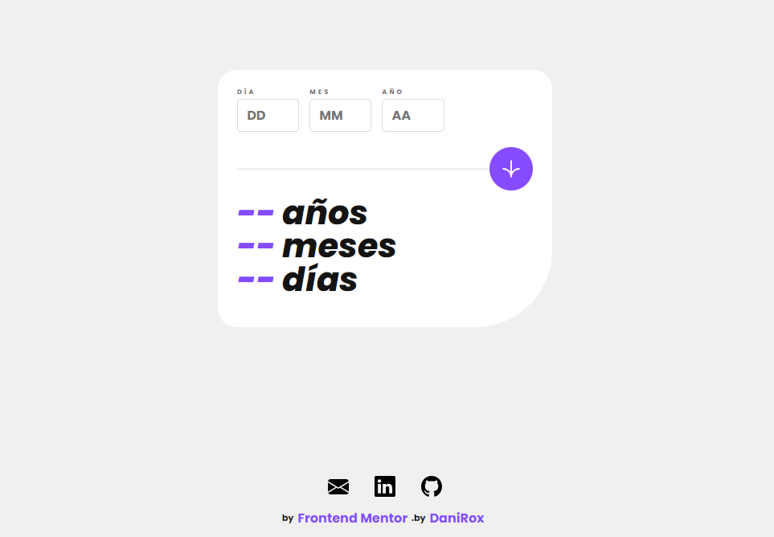

Calculadora de edad
Desarrollé esta calculadora de edad como parte de un desafío en Frontend Mentor. La aplicación web permite a los usuarios calcular su edad en años, meses y días. Utilicé HTML, CSS y JavaScript para crear una interfaz intuitiva y fácil de usar. Uno de los desafíos principales fue garantizar la precisión de los cálculos teniendo en cuenta la variabilidad en la longitud de los meses. ¡Fue un proyecto divertido que me permitió mejorar mis habilidades en el desarrollo web frontend!
deploy
code